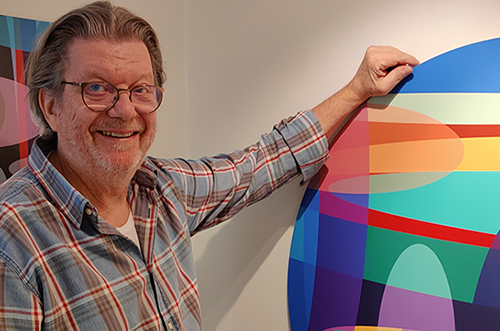
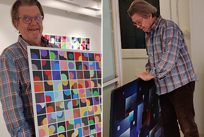
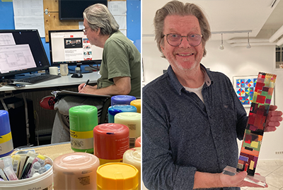

A SHORT TIME AFTER having started working as a computer programmer, I began
to paint. Perplexing and remarkable - neither my family nor any of my acquaintances
had this kind of interest. I myself had not previously shown any interest in art either,
so I too was surprised. In retrospect, I can see why I started to paint in a constructivist spirit.
As I see it, information technology and mathematics are related and mathematics and art
can support each other in many ways. I was influenced by mathematics, series of numbers, fractals,
combinatorics and such, and I found inspiration in minimalism and conceptual art.
In the early 1980s I got to know the Swedish artist Philip von Schantz, a relationship that lasted
until his death in 1998. We had periodic close contact with many and long discussions about art and
it was through the encouragement
of Philip that I continued my artistic ambitions and had my first solo exhibition at Galleri
Engelbrekt in Örebro in 1991.
ARTIST STATEMENT
Painting
My work investigates the relationship between color, structure and perception. Using geometric frameworks such as grids, bands and layered forms I explore how simple visual systems can generate complex experiences of space, rhythm and light. Color is the primary subject of the work and the color acts as an active force that shapes the viewer's perception. Through variations in hue, value, transparency and scale, my compositions shift between stability and movement, order and ambiguity. My practice is informed by traditions of geometric abstraction and color field painting, while focusing on the experience of seeing itself, using color as a means of creating dynamic and changing visual fields. I aim to heighten attention to subtle interactions between colors and forms.Digital work
I create algorithmic and generative visual systems rather than individual images. The artwork emerges through the interaction between defined rules and unpredictable computational processes. My custom-developed generative software creates unique images from geometric forms, color systems and controlled randomness. I design the rules and parameters that enable images to emerge. The resulting works exist between order and unpredictability, combining structured visual systems with chance-based variation. Some images are selected and presented as fixed works, while others appear as part of continuous, self-generating installations in which each image exists only momentarily before being replaced. Through these generative processes, I explore questions of perception, authorship, time and the relationship between human intention and algorithmic creation. The artwork is not only the image itself but the system that makes its appearance possible.CONTACT:
Ove Carlson
ove@carlson.se
+46 (0)70 510 29 31